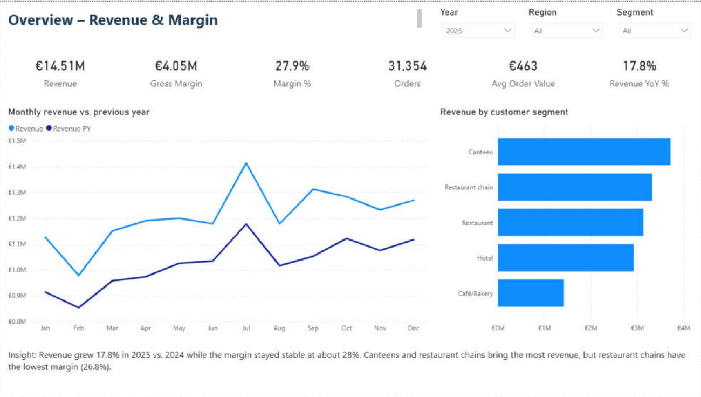
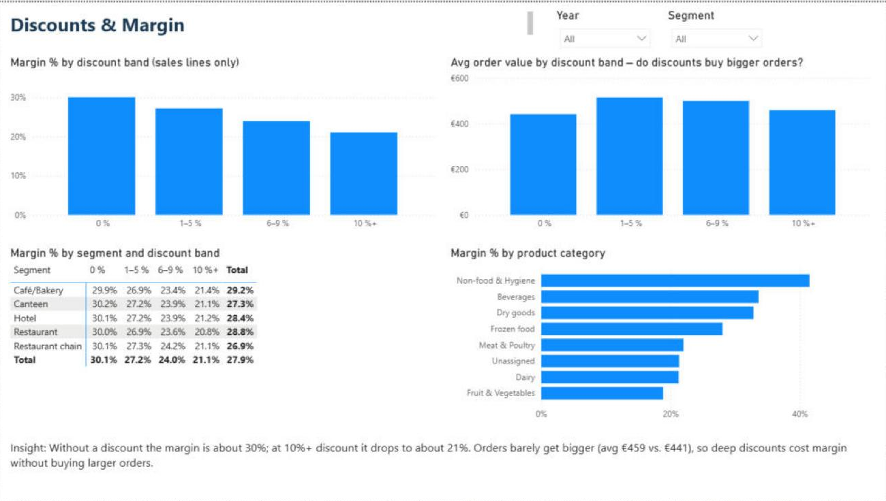

The goal
Management of a wholesaler asked four questions: How are revenue and margin developing, and which segments drive them? Are our discounts worth it? Which customers are we about to lose? Where do deliveries fail, and how much money is overdue? The report answers each one on its own page and ends every page with one sentence of insight.
About the data. The data is synthetic. A Python script generates it to look like a real ERP export, including the usual problems. The numbers describe this project, not a real company.

The data
Cleaning in Power Query
| Problem | Where | Fix |
|---|---|---|
| Exact duplicate lines (double export) | order lines | remove duplicates on line_id (3,296 rows) |
| Negative quantity on sales lines | order lines | flip the sign for sales, keep real returns negative (40 lines) |
| Dot decimals read on a German PC | order lines | change type with locale en-US (otherwise 7.37 becomes 737) |
| Semicolons and comma decimals | products | delimiter ;, change type with locale de-DE |
| Two date formats in one column, blanks = unpaid | invoices | parse by format; null means not yet paid |
| Trailing spaces in IDs, duplicate customers | customers | trim, then remove duplicates (6 rows) |
| One city spelled several ways | customers | mapping list (Muenchen, münchen → München …) |
| Labels exported in German | all files | small translate function after cleaning (Kantine → Canteen, Verkauf → Sale …) |
Data model
A star schema: three fact tables (sales lines, orders, invoices) around four dimensions (customer, product, sales rep, date). All relationships are many-to-one with single-direction filtering, and the date table is marked as a date table so time-intelligence functions such as SAMEPERIODLASTYEAR work.
One deliberate choice: the invoice table is not connected to the date table. Receivables are a snapshot as of the data extract (31 Jan 2026), so the Year slicer should not change them.
DAX
All 25 measures live in one measure table, grouped in folders: sales, time comparison, customers, discounts, delivery and receivables. Three examples:
Cost = SUMX(FactSales, FactSales[quantity] * RELATED(DimProduct[unit_cost_eur])): row-by-row cost with the unit cost fetched from the product table.Last Order Date = CALCULATE(MAX(FactSales[order_date]), ALL(DimDate)): ignores the year slicer, so a customer's true last order is always shown.Revenue YoY % = DIVIDE([Revenue] - [Revenue PY], [Revenue PY]): growth vs. the same period last year.
Every KPI was checked against an independent calculation in pandas that applies the same cleaning rules.
What the data showed
- Growth without margin loss. Revenue grew 17.8% while the margin stayed at about 28%. Restaurant chains are a large segment with the lowest margin (26.8%).
- Deep discounts don't buy bigger orders. Average order value is €441 without a discount and €459 at 10%+, but the margin falls by nine points. This is an association: discounts were not randomly assigned.
- Churn risk is concentrated. Sorting inactive customers by lifetime revenue tells the sales team whom to call first.
- Old invoices are the real problem. Most overdue money is more than 90 days late, which points at collections, not at payment terms.

Recommendations
- Review the 10%+ discount tier and test smaller discounts on a group of customers before changing the policy.
- Call the most valuable inactive customers first, using the churn-risk table on the Customers & Sales page.
- Start collections with invoices more than 90 days overdue.
Limits
- The data is synthetic, so the findings show the method, not a real market.
- The report runs on local CSV files. In a company it would connect to the ERP or a data warehouse and refresh on a schedule in the Power BI Service.
- The churn rule (no order for 90 days) is simple. Each customer's normal ordering rhythm would make it sharper.